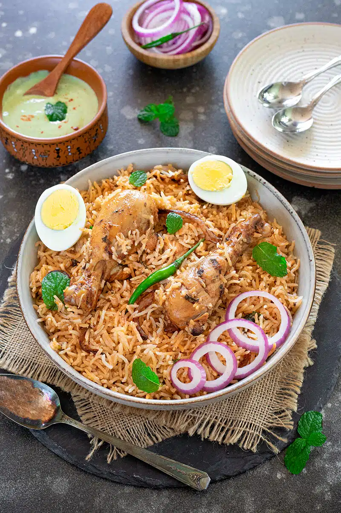

using tags
how to make prepare chicken biryani

youtube biryani
instagram biryani reel
- Prep time: 60-150 minutes
- Cook time: 30 minutes
- Total time: 90-180 minutes
use making biryani ingredients
order list
- cups basmati rice
- tablespoons Ginger & garlic paste
- green chilies (or less, depending on taste)
- onion finely chopped
- 2 teaspoons Garam Masala powder
- 3 teaspoons chili powder (or less, depending on taste)
un ordered list
- tomato finely chopped
- teaspoons ea. cinnamon, cloves, cardamom
- tablespoons oil or ghee
- cups carrot, peas, & finely cut beans
- Mint leaves & coriander leaves (handful)
- Juice of ½ lemon
description lists
- attributes
additional info about elements
- tikka
- it is a dish made of paner
- panner tikka
- it is a dish made of paner
- panner tikka
- it is a dish made of panner
my contact details
mail:yashureddy6301@gmail.com
ph no:6301644695